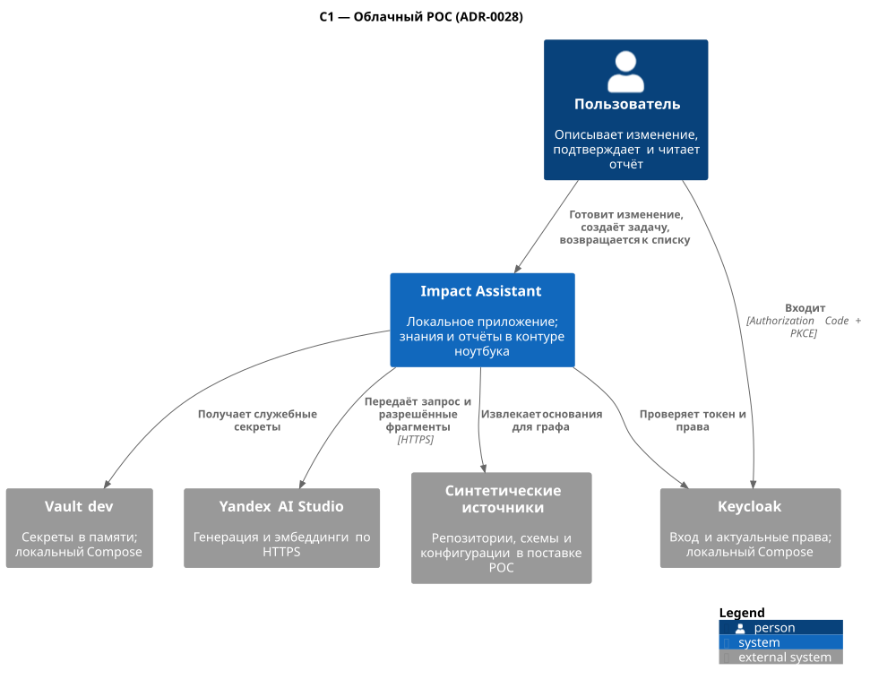
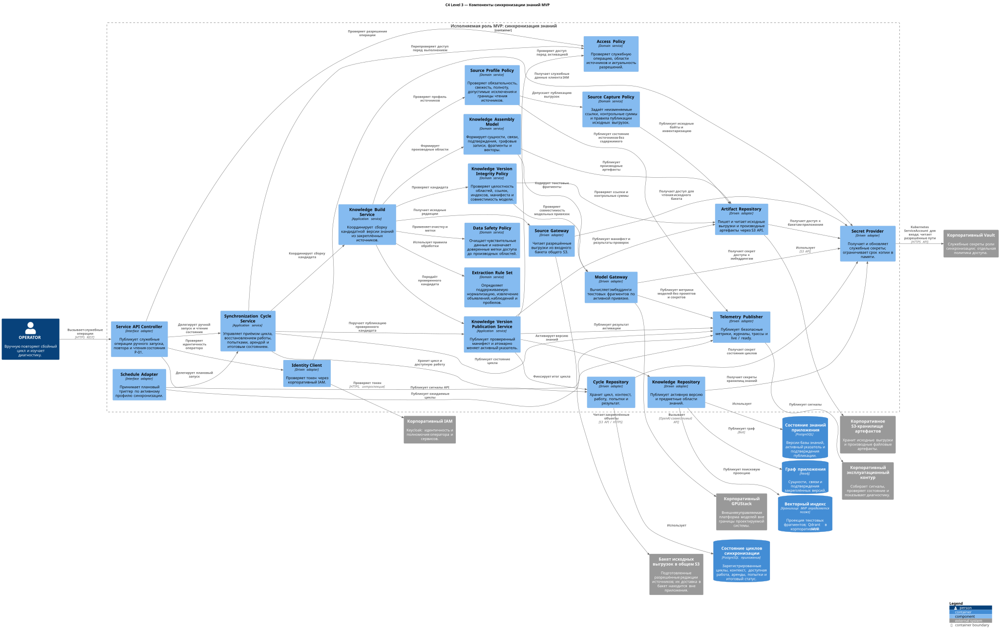

C1 · Контекст POC
Исходная детальная диаграмма POC.

C3 · API и анализ · MVP
Детальная компонентная схема целевого MVP, включая корпоративный GPUStack и Qdrant.
C3 · Синхронизация знаний · MVP
Подробная UML-схема публикации версии знаний.
